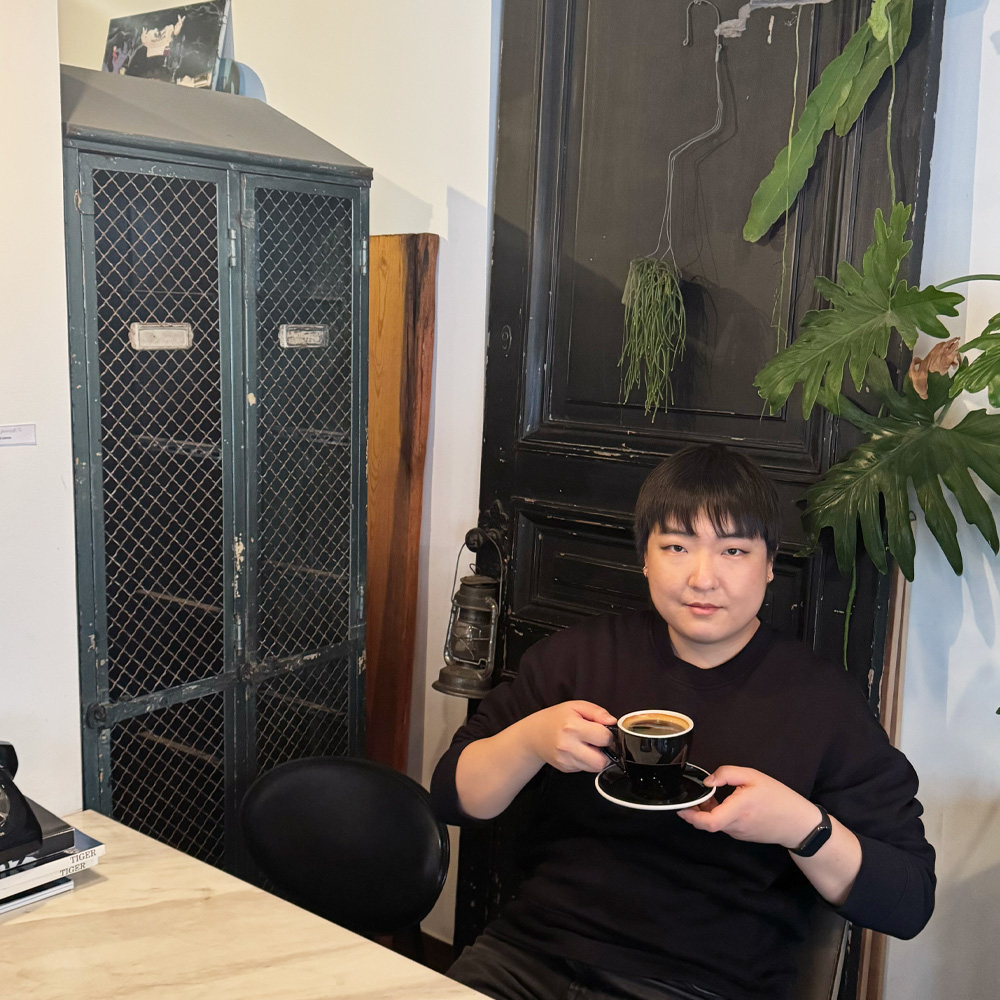

About Me
Hello there! My name is Jueun Jeon (전주은) and I am a UI/UX designer from South Korea. I went to RISD for BFA Graphic Design and graduated from the School of Visual Arts for MFA Interaction Design. I am currently working at Belinker as a UX/UI Designer.
My biggest passion is to design a meaninful tool for them to create the value in their works and lives. I use my UX/UI design skills to achieve my goal. Besides design, I also do digital content and illustration in my freetine.
In my free time I code my own website, paint and play bass guitar. I'm always open for new connection and conversation!